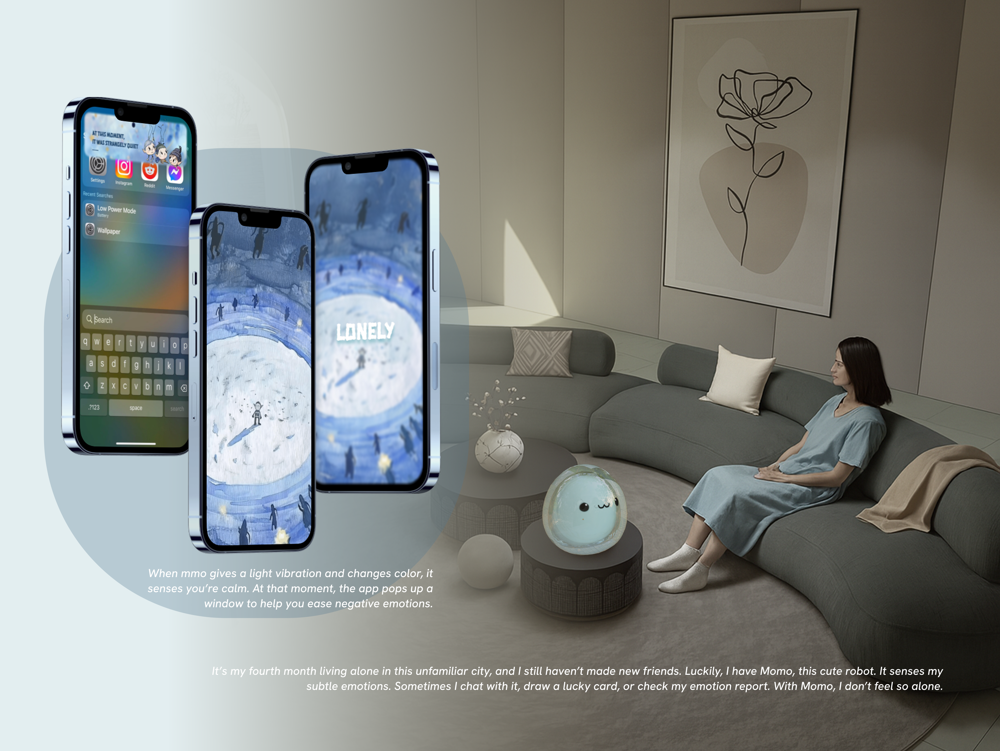
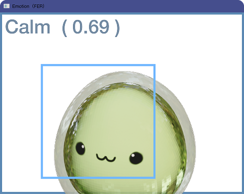
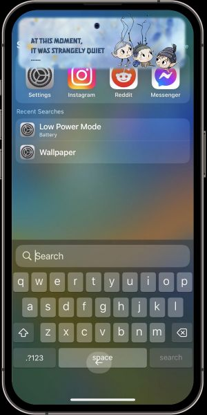
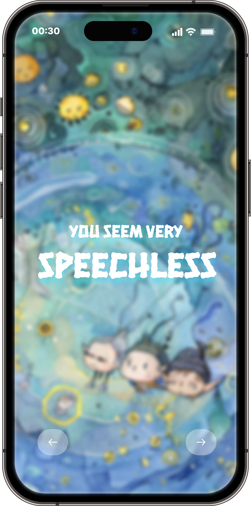
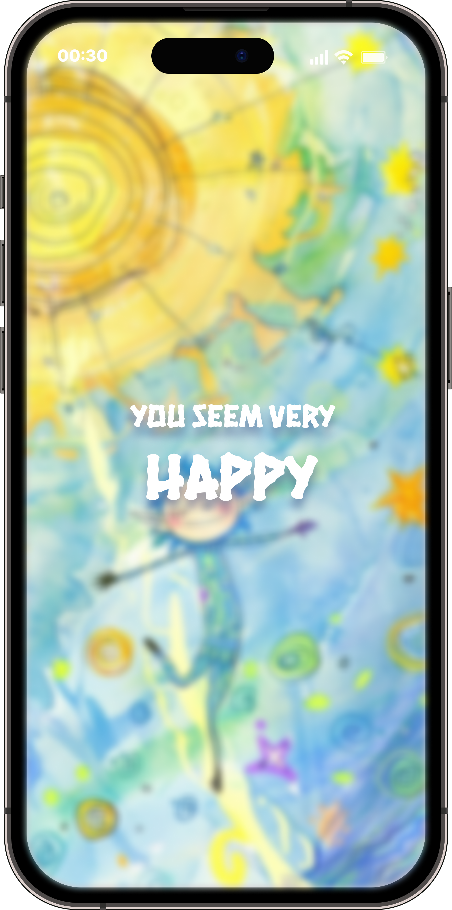
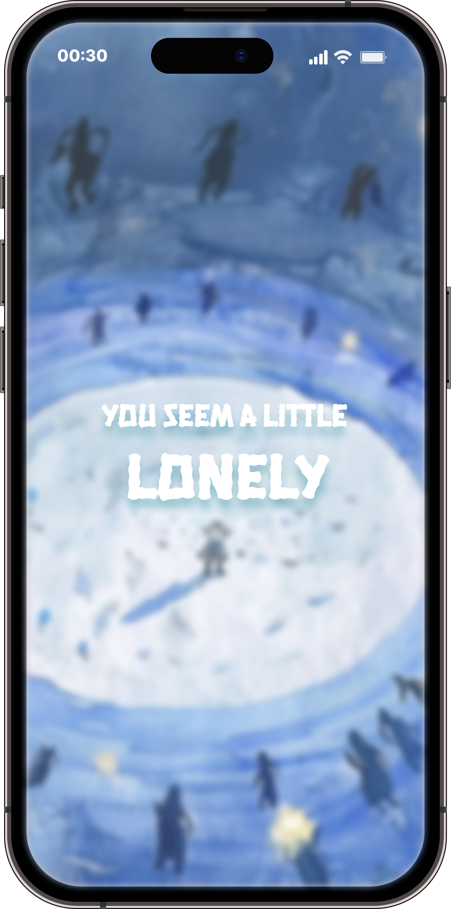

A check-in can feel like another demand when it arrives at the wrong moment. EmoBox gives people a small invitation to engage, then lets them try an activity, draw another card or stop.
ExperienceFace, voice and touch connected with a mobile app
Project statusStudent prototype · Original Figma UI & usage demo

Momo in everyday life · Concept scenario and personalized mobile experience.
The opportunity
Support should not become another demand.
EmoBox is for young people living alone who may find it hard to talk about their feelings. The challenge was to offer company without making them feel they had to respond.
How could the companion offer support without deciding what someone should do next?
Testing & iteration
Let people decide when to start and stop.
The test notes pointed to two problems: a prompt could interrupt someone at a bad moment, and drawing cards could feel too restrictive. Both made the choice to start or stop important.
Start quietly.
One person said a phone pop-up made a bad mood feel worse. The test notes suggested a small vibration from Momo instead.
A vibration could be easier to miss, but it would also be less demanding. I proposed it as a first signal, leaving the phone check-in for when the person wanted to open it.
Let “no” be a complete response.
Another comment asked for more freedom to skip a card or stop drawing. An activity meant to help should not feel like something to finish.
The later flow includes options to try, redraw or leave. People can also open Daily mode themselves instead of waiting for a prompt from Momo.
These changes respond to the feedback, but their effect has not been measured. I would next test whether people can decline or leave easily and whether the quieter prompt feels less intrusive.
Two ways to connect
Follow a prompt or open the app yourself.
People can enter in two ways: follow a signal from Momo, or open Daily mode to draw a card whenever they feel like it.
01 / Emotion-triggered mode
Notice → personalize → choose → reflect
An expression cue leads to an AI-generated emotion card. From there, the person can draw an activity, talk with the card’s spirit or look back at their recorded feelings.
02 / Daily mode
Open → draw → enjoy
Open the app, draw a card and decide whether to try it. No expression cue is needed.
Emotion-triggered / 01
Detect a feeling. Invite a check-in.
The original prototype used an expression cue to trigger a phone notification. After the feedback, I proposed a light vibration from Momo as the first invitation. The screens below still show the original notification flow.
The person can open the notification or leave it for later. Opening it leads to a personalized emotion card.

Momo detects an expression cue→

Momo senses a cue → a small notification invites a check-in.
Emotion-triggered / 02
An emotion card made for this moment.
AI generates an illustrated card from the detected expression cue. The scene and its small spirit give the person something to respond to beyond an emotion label.
The card designs include happiness, loneliness and feeling speechless. Each leads into the same check-in and activity flow.



Different feelings, different visual worlds · Original card designs.
One companion. Different emotional worlds.
These GIFs show the invitation, illustrated card and check-in across five designs from the Figma prototype.